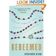

It’s a fairly safe bet a book is going to be good when you read the first paragraph and find yourself stalled; not because it’s too awful to move ahead from there but because it’s so thought-provoking.
{kind=link}
A friend from my writers’ list sent a note about this newly released memoir, Redeemed, by Heather King, a few weeks back. After reading a description, I ordered a copy and it arrived yesterday. This put me in a bit of a quandary, though, because yesterday is also the day I acquired a copy of The Shack, a book my moms’ group will be discussing soon. Both have been on my “to read” list, and I’ve been eager to get at them. I’m afraid this might be one of those times I will be reading two books at once because each has been equally compelling to me based on initial descriptions. For some reason, though, Redeemed is speaking the most loudly to me right now. Perhaps it’s because of my pre-Lent mindset (see yesterday’s post). So, I’ll probably finish it first.
Here’s the opening paragraph from the Introduction:
“The Christian religion is only for one who needs infinite help. That is, only for one who feels infinite anguish. The whole earth can suffer no greater torment than a single soul. The Christian faith — as I see it — is one’s refuge in this ultimate torment. Anyone to whom it is given in this anguish to open his heart, instead of contracting it, accepts the means of salvation in his heart.”– Ludwig Wittgenstein
To open his heart, instead of contracting it… What a powerful image. And yes, I would say that I need infinite help, to be certain! Left to my own devices, I would (and have) failed every time. So, bring it on, King. I’m ready and open to what you have to share.
If this is any indication how the rest of the book is going to play out, the cover quote by The Boston Globe says: “This memoir deserves to be as popular as Elizabeth Gilbert’s…Eat, Pray, Love.”